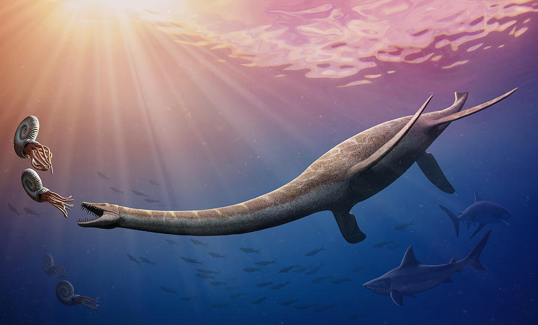
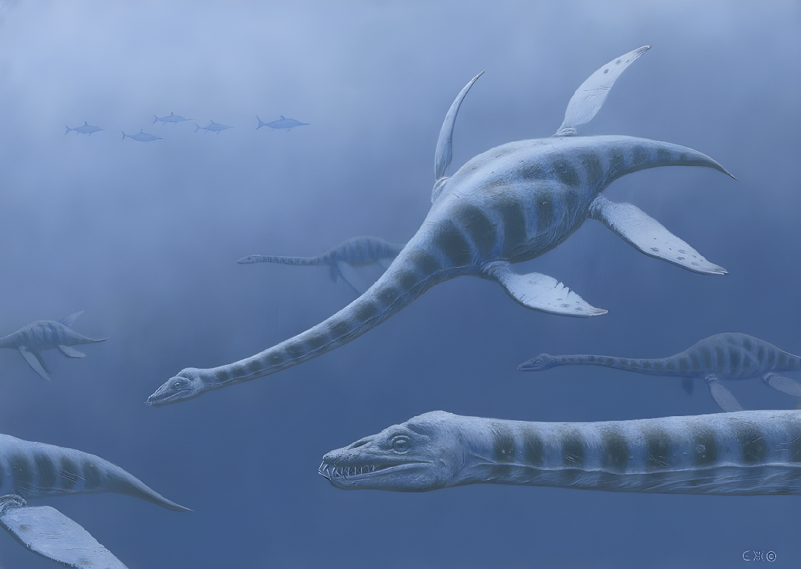
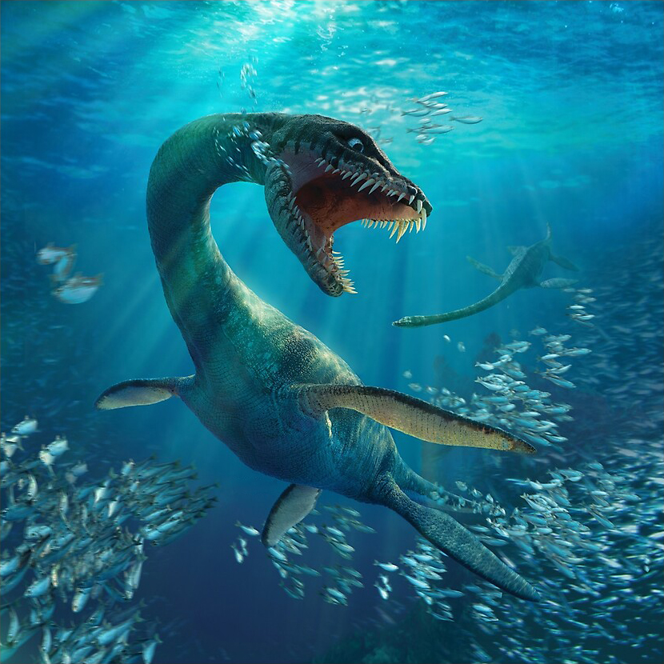
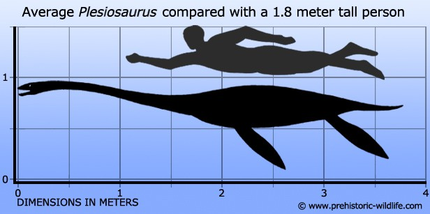
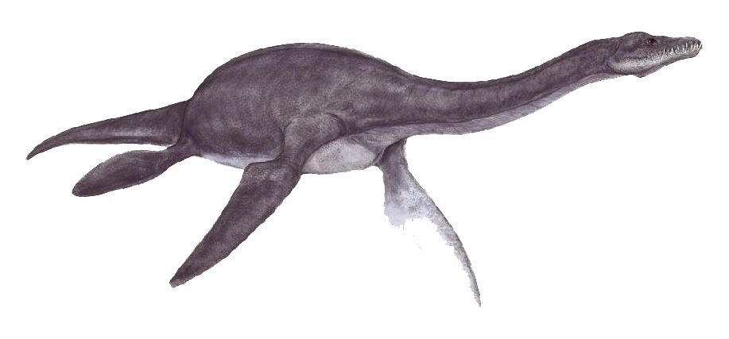
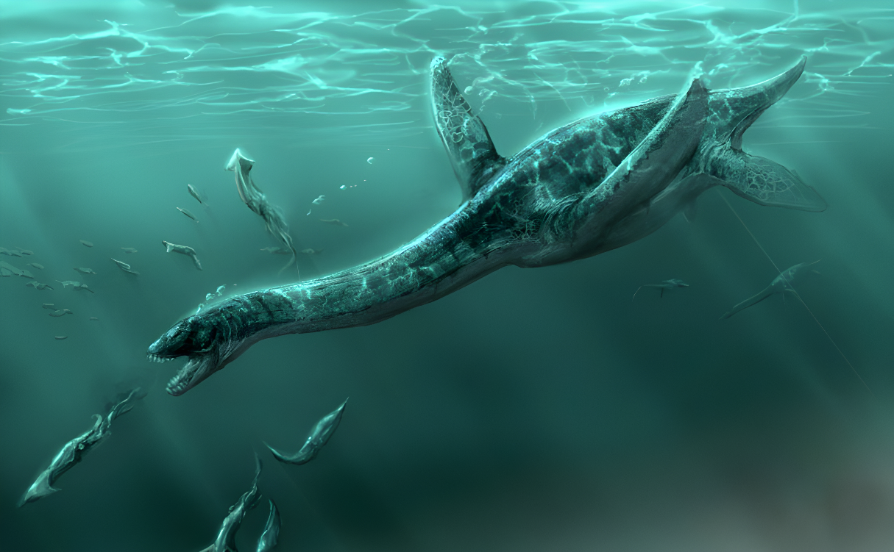
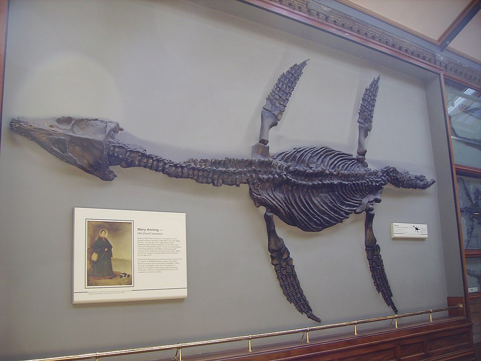
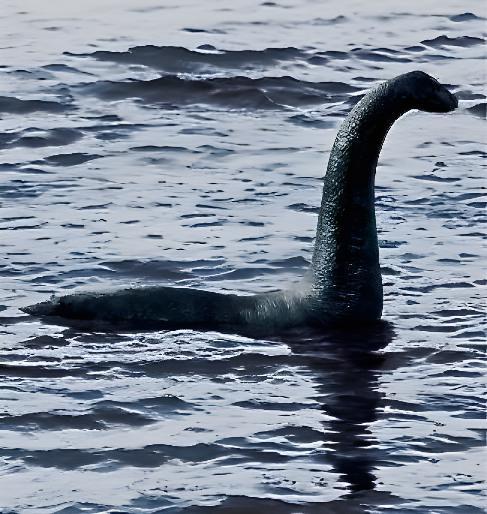

Plesiosaurus
Xà Đầu Long kỷ Jura
Tổng quan
Kỷ
Jurassic
Họ
Plesiosauridae
Chi
Plesiosaurus
Dài
4 m
Nặng
500 kg
Thức ăn


Plesiosaurus là một chi bò sát biển lớn đã tuyệt chủng thuộc bộ Plesiosauria. Chúng sống vào thời kỳ đầu kỷ Jura. Chúng là một trong những loài khủng long biển nổi tiếng nhất và đã trở thành một biểu tượng của thời kỳ khủng long.
Nguồn: wikipedia.org
Phân bố
Khu vực biển Châu Âu, Châu Úc, Bắc Mỹ và Châu Á
Thông tin thêm về Plesiosaurus
Kỷ nguyên
Những con Plesiosaurus sớm nhất xuất hiện chủ yếu từ giữa thế kỷ Trias và phát triển cực thịnh trong kỉ Jura, khoảng từ 201 đến 145 triệu năm trước đây.
Phân bố
Sinh vật này đã sống ở vùng đại dương cổ đại và được cho là đã từng bơi qua khắp các vùng biển Châu Âu và xung quanh Thái Bình Dương, bao gồm Châu Úc, Bắc Mỹ và Châu Á. Chúng được phát hiện ở nhiều địa điểm trên thế giới, bao gồm Anh, Chile, Nhật Bản và New Zealand.
Tên khoa học
Cái tên Plesiosaurus được đặt bởi Rev. William Conybeare năm 1821 có nghĩa là Thằn lằn đầu rắn, mô tả chiếc cổ dài cùng phần đầu giống như rắn của chúng.
Kích thước
Plesiosaurus là một loài bò sát biển có kích thước trung bình và được cho là có thể phát triển tới chiều dài khoảng từ 4 đến 6 mét. Cân nặng khoảng 500kg.
Ngoại hình
Plesiosaurus có một thân hình tròn dài, phẳng và đuôi tương đối ngắn, với bốn chân giống như các chiếc chân vịt. Lỗ mũi nằm xa trên đầu gần mắt, cổ ngoằn ngoèo dài gần bằng phần còn lại của cơ thể và linh hoạt với một cái đầu nhỏ.
Chúng có hai cặp vây chèo lớn ở hai bên thân và bơi bằng cách vỗ vây trong nước, giống như sư tử biển ngày nay, giúp chúng bơi nhanh và linh hoạt, như một kiểu “bay” dưới nước vậy.
Chế độ ăn và săn mồi
Plesiosaurus là một loài ăn thịt, bao gồm cá, mực belemnites và các loài động vật biển khác.
Chúng chủ yếu săn mồi dưới nước, có thể kiếm ăn bằng cách lắc đầu từ bên này sang bên kia, bơi xuyên qua các qua đàn cá, bắt con mồi bằng cách sử dụng chiếc cổ dài cùng với hàm răng sắc nhọn để chộp lấy con mồi.
Khám phá
Mẫu vật đầu tiên được phát hiện bởi Mary Anning trong khoảng hai năm 1820-1821 nhưng bị thiếu mất hộp sọ. Bà đã tìm thấy nó ở 'Jurassic Coast' tại Lyme Regis, Dorset, Anh. Vào năm 1823 bà lại tìm được một hóa thạch khác, lần này đã có được một bộ xương hoàn chỉnh cùng với hộp sọ.
Trong nghệ thuật
Plesiosaurus chỉ là một chi trong số nhiều loài tạo thành họ Plesiosauriae. Plesiosaurus rất nổi tiểng trong các mô tả nghệ thuật, tuy nhiên nhiều nghệ sĩ không phân biệt giữa các loại Plesiosaur này. Ngoài ra, phần lớn nghệ thuật mô tả Plesiosaurus bị ảnh hưởng nặng nề bởi thần thoại cryptozoid xung quanh Quái vật hồ Loch Ness và các sinh vật tương tự khác.
